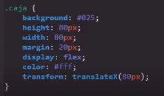
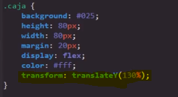
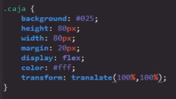
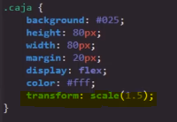
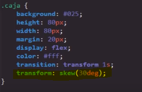
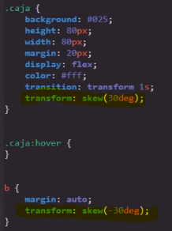
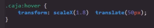
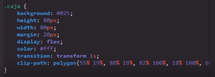

Propiedad TransoForm
La función de esta propiedad es la de transformar el elemento en el que esta se aplique, lo cual esta propiedad puede hacerlo de barias maneras:
Desplacando el elemento Ya sea vartical o horizontalmete con el uso de las propiedades:
Escalando el elemento: Ya sea haciendolo más grande o más chico
Cambiando la forma del elemento Añadiandole grados de inclinación
Nota: La propiedad transform con el valor Translate es la mejor forma de hacer las animaciones y transiciones, ya que es la propiedad que menos cantidad de recursos consume, ya que unicamte desplaza al elemento de la animación a una nueva capa y lo modifica.
Valores
TranslateX
-
Este valor indica que el elemento debera desplazarse horizontalmete, para el funcionamiento de este valor tambien debe de incluirse la distancia que el elemento se despalazara, para lo caul se incluye la cantidad en medidas dentro de paretensis.

Nota: Si se da el caso de que se defina 100% como cantidad de desplazamiento el elementos se desplazada una distancia igual al tamaño de este, es decir si el elemento mide 100px el desplazamiento horizontal sera de 100px.
Nota: Los valores positivos en esta propiedad traslada en elemento hacia la derecha y los negativos hacia la izquierda.
TranslateY
-
Este valor indica que el elemento debera desplazarse verticalmete, para el funcionamiento de este valor tambien debe de incluirse la distancia que el elemento se despalazara, para lo caul se incluye la cantidad en medidas dentro de paretensis.

Nota: Si se da el caso de que se defina 100% como cantidad de desplazamiento el elementos se desplazada una distancia igual al tamaño de este, es decir si el elemento mide 100px el desplazamiento horizontal sera de 100px.
Nota: Los valores positivos en esta propiedad traslada en elemento hacia abajo mientras que los negativos lo hacen hacia arriba.
Translate
-
Se trata de la propiedad de abrebiatura de translateX y translateY, su función es simplemete realizar el mismo efecto que estas propiedades en una sola declaración, por lo que el fin de esta propiedad es sinplificar y optimizar el codigo CSS, esta propiedad recibe dos datos, cada uno referente a cada propiedad.
Ejemplo

Scale
-
Este valor permite aumetar el tamaño de un elemento X numero de beces, para hacerlo esta propiedad multiplica las dimenciones del elemento por un valor numerico definido en la propiedad dentro de un parentesis, es decir el elemento se puede multiplicar por el numero que se desee, volviendose tan grande como se plazca, tambien es posible reducir su tamaño multiplcando las dimanciones de elemento por numeros menores a 1 como por ejemplo "0.5".

Esta propiedad cuanta con diversas variantes que seccionana la funcionalidad de scale, estas propiedades son:
-
ScaleX: Esta propiedad aumenta el tamaño del elemento unicamete en el eje
ScaleY: Esta propiedad aumneta el tamaño del elemento unicamete en el eje Y
ScaleZ: Este valor no se aborda en el curso por su complejidad
Scale3D: Este valor no se aborda en el curso por su complejidad
Nota: Esta propiedad convierte los elementos en imagenes vectorizadas con el fin de que no se pierda calidad a la hora de agrandarlos.
Skew
-
Este valor permite modificar la forma de los elementos añadiandole x cantidad de grados de inclinación a estos, ya que esta propiedad trabaja en base a grados unicamete acepta las siguites medidas como sus valores: deg (grados), rad (radianes) y grad (gradianes), entre todas estas medidas los más recomendables así como los más utilizados son los grados.
Codigo

Resultado
Como se puede ver en el ejemplo, al aplicar esta propiedad en el contenedor su ejecto tambien influye en el contenido de este, para contrarestar esto la solución es aplicar una segunda propiedad skew al elemento hijo, peron con un valor inverso, para que de este modo ambas propiedades se contraresten y resulte en un contenedor inclinado pero un contenido sin ningun tipo de inclinación, de la siguiete forma.
Codigo

Resultado
Nota: Todas estas propiedades al fin y al cabo son valores de la propiedad "transform", por lo que se pueden aplicar a la vez desde un unico llamdo de esta, esto con el fin de poder aplicar más de un efecto a la vez para obtener la mayor cantidad de posibilidades posible a la hora de crear un efecto.

Nota: Es util tener en cuenta que al utilizar la propiedad "transform" en un evento esta sera sobre escrita asi que es necedario repetir cualquier valor que se desee conservar.
Realmte la propiedad transform es inmensa, con un gran numero de posbles valores, en este apartodo tansolo se tocaron los vaolres basicos, sin embargo existen muchas más osibilidades, todas estas estan definidas en este enlace, en caso que se necesiten o dese indagar más.
Propiedad Clip-path: polygon;
como tal esta es una propiedad completamete independiente de transform, sin embargo al igual que esta permite trasnformar un elemento al cambiar la forma de este, debido a la gran relación en su efecto se hac referencia a esta propiedad en este apartado.
La propiedadClip-path junto con el valor plolygon permite modificar la forma de los elementos a plaser, sin embargo para generar las formas se necesitan ingresar multiples tipos de datos, razon por la cual simplemte se suele utilizar un generador de Clip-path como el que se enceuntra en este enlace.
Codigo

Resultado